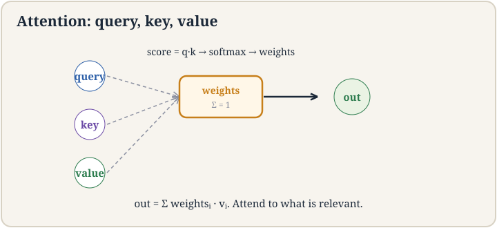
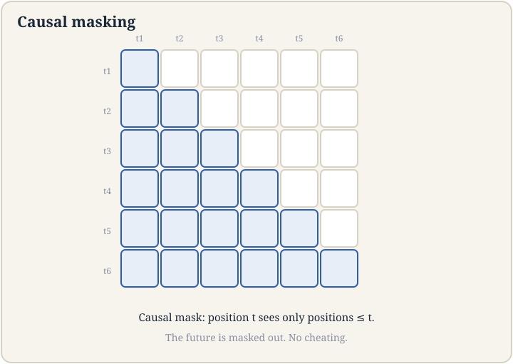
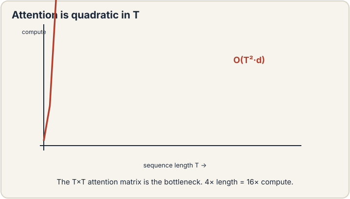
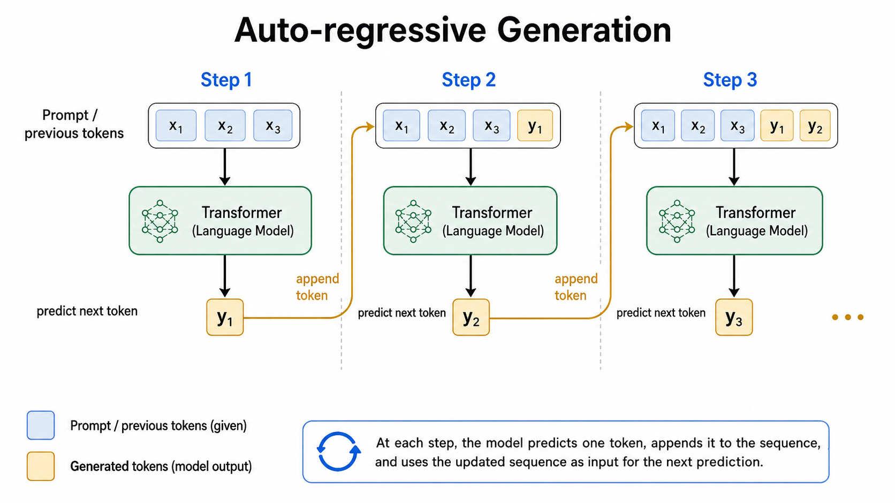

Lecture 14: Transformers and Autoregressive Language Models
Video blocked (ad-blocker or local file mode).
Watch on YouTubeVideo not loading? Watch on YouTube
Original lecture. Tengyu Ma builds the transformer: tokenization, attention, masking, and the O(T^2) cost.
How to read this lesson
This lesson has two levels. Level 1 (Core) contains what you need to understand everything that follows in CS229 and the courses that build on it. Level 2 (Deep) contains what you need for correct, interview-grade understanding. Read Level 1 straight through. Return to Level 2 when you want depth.
No prerequisites are assumed. Every term is defined at first use. The MLP, residual block, and softmax were defined in lectures 7 and 4; they are reused, not re-explained.
Level 1: The autoregressive paradigm
A language model assigns probabilities to sequences of tokens. The autoregressive paradigm factors the joint probability into a product of conditionals 01:00 ⏱01:00:
p(x_1..x_T) = product over t of p(x_t | x_1..x_{t-1})
Generate one token at a time. Each new token depends on all previous ones. The model is causal: position t sees only positions up to t 24:29 ⏱24:29. This lecture covers autoregressive transformers only. Non-autoregressive variants are skipped.
The paradigm starts with GPT-3. Before it, the field trained models per task. After it, one model generates text for everything. Lectures 15 through 17 continue the story: efficiency, prompting, fine-tuning, reinforcement learning. This lecture is the architecture.
Each token is predicted from the tokens before it, one step at a time. The joint probability is the product of these conditionals by the chain rule. Generation is sequential: you cannot produce token 10 before tokens 1 through 9. Training is parallel, because all the true previous tokens are known. That asymmetry shapes everything about transformers. Training uses teacher forcing: the true previous tokens are in the data, so every position’s prediction can be computed at once. Generation has no true tokens: each prediction becomes the input for the next. The model must wait for its own output. This is why inference optimization is its own field.
Level 1: Tokenization
Transformers compute on numbers, not text. Tokenization turns text into integers first 01:48 ⏱01:48. The token is the smallest unit the model sees. Not characters: sequences get too long. Not words: vocabularies explode and new words break. Subword pieces: frequent strings become single tokens, rare ones split.
The tokenizer is fixed before training and never changes. Every token indexes a row of the embedding matrix. Replace the tokenizer and the model’s input space changes meaning: the trained weights no longer apply. Tokenization is infrastructure, decided once, lived with forever. CS336 derives it from first principles.
Level 1: Attention from Q, K, V
Attention lets each position gather information from other positions. The input is a sequence of vectors h_1..h_T. Each becomes three vectors: a query q, a key k, a value v, via learned projections 44:10 ⏱44:10.

The mechanism: score = q . k, a dot product measuring relevance. Softmax over scores gives weights summing to one. Output = weighted sum of values. In words: the query asks “what do I need?”, the keys advertise “what I have”, the weights decide the mix, the values supply the content.
The lecture is honest about understanding: the intuition is relevance matching, but nobody knows exactly how attention works inside trained models. It just works. Mechanistic interpretability, mentioned in lecture 12, is the field trying to change that.
Separation of concerns. The query encodes what the position is looking for. The key encodes what each position offers. The value encodes what each position contributes if selected. One vector cannot serve all three roles well: what you seek differs from what you hold. The projections learn the three roles separately. It measures alignment: large when query and key point the same way. Scaled by dimension to keep softmax inputs in a sane range. The choice is simple, differentiable, and fast on hardware. Fancier similarity functions exist, but the dot product won on the tradeoff.
Level 1: Causal masking
Causality must be enforced mechanically. The score matrix is T-by-T: every query against every key. Masking adds negative infinity to the upper triangle before the softmax 61:09 ⏱61:09. Softmax turns negative infinity into zero weight. Position t attends only to positions up to t.

Without the mask, the model would cheat: peek at future tokens during training, then fail at generation where the future does not exist. The mask is the difference between a model that predicts and a model that copies. Every autoregressive transformer carries it.
Level 1: The block and the bottleneck
A transformer block stacks: attention, normalization, MLP, with residual connections around each 72:35 ⏱72:35. The normalization is usually RMSNorm. The order of norm, residual, and sub-layer varies: pre-norm applies normalization before the sub-layer, post-norm after 73:26 ⏱73:26. Details are in the notes. The shape is the same: attend, normalize, transform, add back.
Then the bill. The attention matrix is T-by-T, each entry a dot product in d_h dimensions: O(T^2 d_h) operations 74:32 ⏱74:32. The T^2 is the bottleneck. Double the sequence length, quadruple the attention cost. Everything about transformer efficiency, the guest lecture on system ML, sparse attention, and the KV cache of lecture 15, is a response to this term.

Every position scores against every other position: T queries times T keys. The matrix itself is T^2 entries, each costing a dot product. Nothing about the mechanism avoids the pairwise comparison. Linear-time attention variants exist but change the model. The quadratic term is the price of letting every token see every other token. Memory, usually before compute. The T^2 matrix must be stored for the backward pass. Long-context training is memory-bound: the activations, not the FLOPs, set the limit. That is why memory-efficient attention and gradient checkpointing are production necessities, not optimizations.
Level 2: Multi-head attention
One attention head learns one relevance pattern. Multi-head attention runs several heads in parallel on slices of the dimension and concatenates the results. Each head can specialize: one tracks syntax, another tracks coreference, a third tracks position. The lecture presents single-head first because the mechanism is identical per head. The multiplicity is capacity, not concept.
Heads also parallelize cleanly: independent score matrices, one concatenation. The hardware likes this. Much of the transformer’s success is mechanisms that are both expressive and parallel-friendly.
Level 2: The next-word prediction loss
Training minimizes cross-entropy on the next token: the loss chip from lecture 2 holding -log p of the true next token, summed over positions. Every position is a training example. A 2048-token sequence is 2048 supervised examples in one forward pass. This density is why language modeling scales: the data labels itself, and every token teaches.
The loss also explains the paradigm’s name. The model never sees the whole sequence as one object. It sees two thousand next-word problems. “Language modeling” is next-word prediction, repeated at scale until reasoning emerges.
Recap: the whole lesson on one screen
Eight ideas carry this lecture. Read each card. Say the core sentence out loud. If you can, you own the lesson.
p(x_1..x_T) = product of p(x_t | past). Causal. Training parallel, generation sequential. The GPT paradigm.
Key: chain rule as architecture
Text to integers before anything else. Subword pieces. Fixed before training, never changed. Infrastructure.
Key: decided once
Scores = q.k, softmax to weights, output = weighted values. Queries ask, keys advertise, values supply.
Key: relevance-weighted mixing
Upper triangle to negative infinity before softmax. Position t sees only the past. No peeking, no cheating.
Key: causality by construction
T-by-T score matrix. 4x length, 16x compute. Memory breaks first. The bottleneck everything else answers.
Key: the quadratic term
RMSNorm, pre-norm or post-norm ordering. Residuals around everything. Same skip trick as ResNet.
Key: composition of lecture 7 parts

Next-token prediction, summed over the sequence. Every token is a training example. The data labels itself.
Key: -log p_true, per token
Multiple Q/K/V projections, concatenated. One mechanism per head. Capacity and parallelism, not new concept.
Key: same attention, many views
Official sources and further reading
Official: - Lecture 14 video: autoregressive paradigm 01:00 ⏱01:00, tokenization 01:48 ⏱01:48, Q/K/V 44:10 ⏱44:10, causal model 24:29 ⏱24:29, masking 61:09 ⏱61:09, residuals 72:35 ⏱72:35, pre/post-norm 73:26 ⏱73:26, T-squared 74:32 ⏱74:32. - CS229 Spring 2026 official course notes: transformer chapter; the autoregressive figure above is from it.
Further reading: - Vaswani et al. (2017), “Attention Is All You Need”: the transformer paper. - Elhage et al. (2021), “A Mathematical Framework for Transformer Circuits”: the interpretability program.
Caveats from these sources. The “nobody knows how attention works” line is about internal mechanisms, not the mathematics, which is exact. Pre-norm versus post-norm is an active design choice with tradeoffs, not a settled answer. The lecture skips non-autoregressive transformers entirely; they exist and matter for some applications.
Connections to the other courses
- CS336: the transformer is CS336’s entire subject: this lecture is the bridge, CS336 is the deep dive.
- CS224N: the 2024 course covers the same architecture from the language side; the mathematics matches.
- CS329H: attention weights are the model’s uncertainty made explicit, reused in decision-theoretic analyses.
Transformer cheatsheet. Autoregressive: p(x) = product p(x_t|past); causal; train parallel, generate sequential. Tokenize first, fix forever. Attention: q,k,v projections; scores=q.k; softmax; output=weighted values. Causal mask: -inf upper triangle. Block: attention, RMSNorm, MLP, residuals; pre/post-norm. Cost O(T^2 d): the bottleneck. Loss: per-position cross-entropy; every token teaches.
Every token sees the past. The mask is the model’s honesty: it can only use what generation would have. Whenever a model seems too good, check what it was allowed to see.
Sources
- VIDEOLecture 14 video, Stanford Online YouTube
- NOTESOfficial subtitle transcript (en-US)
- NOTESCS229 Spring 2026 official course notes (local PDF)